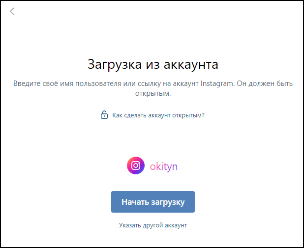
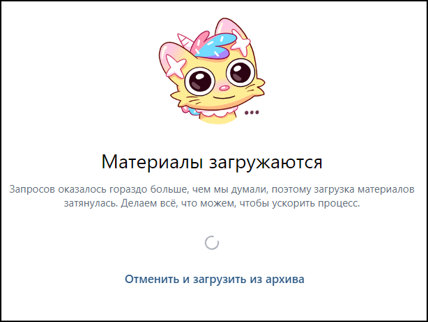
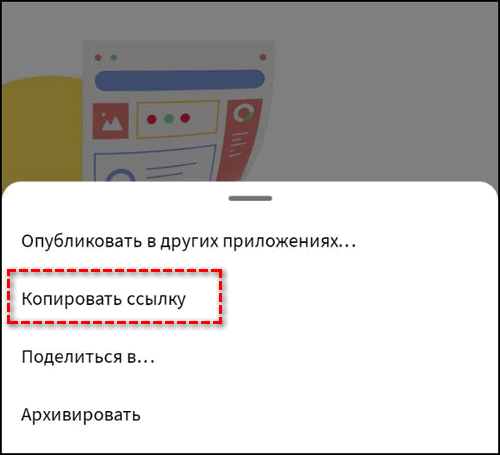
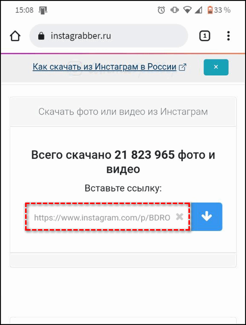
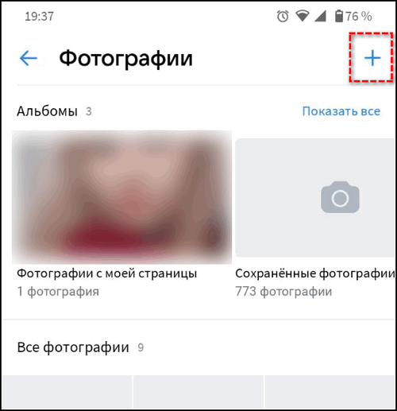
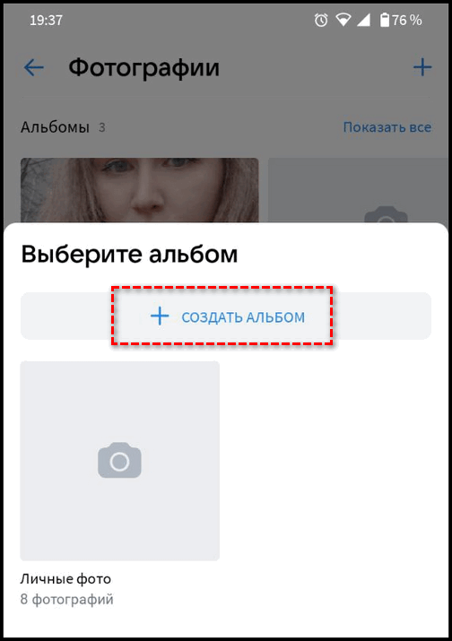

Как перенести данные из Инстаграма в ВК

Перенести данные из Инстаграма* в ВК возможно двумя способами: воспользоваться бесплатным приложением или же самостоятельно, запросив архив в социальной сети.
Как перенести фото и видео из Инстаграма* в ВК
После появления первых сбоев в работе Instagram*, Вконтакте предложили небольшое приложение с экспортом данных. Что подразумевает перенос:
- копирование фотографий и видео;
- перенос аватарки, как отдельное изображение;
- описание страницы.
Но не переносятся подписчики и подписки, лайки и комментарии. Пользователь может воспользоваться переносом через сервис: «vk.com/instagram*_manager»:
- Перейти по ссылке – ввести свой никнейм.

- Разрешить подключение – появится уведомление, что началась выгрузка данных.

Срок переноса данных зависит от количества публикаций, давности регистрации. У пользователей, с количеством постов от 100 экспорт может занять до нескольких дней.
Самостоятельно копируем материалы
Проще всего переносить фотографии из Инстаграма* в Вконтакте с помощью размещения снимков на странице. В этом случае пользователю помогут сторонние сервисы и функция создания скриншотов. Если нужно получить материалы в полном размере:
- Перейти в Инстаграм* – нажать над публикацией три точки.
- Копировать ссылку – перейти по ссылке instagrabber.

- Вставить ранее полученный URL – подождать, пока появится изображение.

- Выбрать: «Скачать» - материал будет отправлен на смартфон или компьютер.
Если пользователь скачивает с мобильной версии, то материалы в системе Android будут отправлены в папку «Загрузки». Далее, нужно перейти в Вконтакте, создать новый альбом и добавить снимки:
- Зайти в Вконтакте – Мой профиль.

- Фотографии – сверху нажать по значку: «+».

- Создать альбом – загрузить снимки, добавить название и описание.
Количество снимков в одном альбоме ВК – 10 000. Поэтому в один альбом можно перенести все материалы из Инстаграма*. Или же опубликовать их у себя на стене.
Скопировать из Архива
Если владелец страницы в Instagram* сделал запрос на Архив данных, то он сможет перенести оригинальные публикации в ВК без потери качества. Где находится медиа в архиве Инстаграма*:
- Перейти к полученному архиву – открыть с помощью WinRar.
- Среди папок найти: «media» - Posts.
- Переходить к папкам и копировать картинки.
- С помощью размещения фото можно опубликовать в Вконтакте.
Почему данные не переносятся
Воспользовавшись первым способом, пользователь может столкнуться с тем, что данные будут долго переноситься. На это есть несколько причин:
- высокая нагрузка на сервера. Это значит, что социальная сеть не справляется с текущей нагрузкой, потому что многие пользователи запросили перенос данных;
- профиль закрыт. Владельцам приватных аккаунтов нужно открыть страницу, чтобы ВК смог подключиться;
- сбои в подключении к Инстаграм*;
- у пользователя много данных.
Перенос информации может занять до трех суток. Нужно регулярно переходить по ссылке и проверять статус. В конечном итоге, Вконтакте предложит создать альбом из снимков в Инстаграме*, куда и будут перенесены данные.
Похожую функцию предложил и Яндекс: пользователи могут создать сайт-одностраничник, выполнив перенос данных из Инстаграма*. На главной будут размещены все фотографии и видеоклипы.